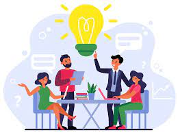
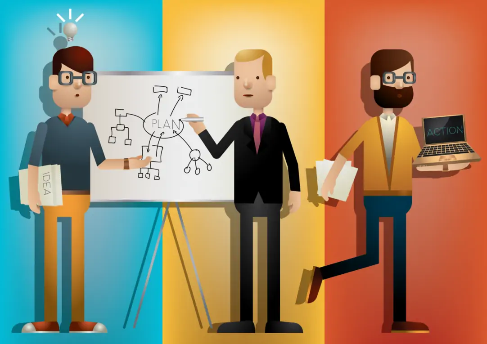

"MI PROYECTO DE VIDA"
Mi nombre es Santiago, soy un joven con muchas aspiraciones y sueños, que disfruta mucho de la vida por todo lo que esta brinda, no hay nada mejor que un buen plato de comida, un paisaje hermoso, una tarde con amigos, hasta el sentimiento de enamorarse hace que para mí la vida sea algo muy bonito y apreciado. Pero como cualquier persona tengo problemas, y me estanco mucho en ellos, me dejo afectar por cosas que ni debería darles importancia, soy muy vago e irresponsable, y el problema no está en serlo, el problema está en saber que soy así y no hacer nada para cambiarlo. Estoy lleno de muchas inseguridades respecto a mi físico, mi forma de ser y la forma en la que los demás me miran y me aprueban porque lo que más me da miedo es el hecho de volver a estar completamente solo como cuando era niño.
Por eso siempre trato de estar pendiente de las personas que me rodean, escucharlos, aconsejarlos y cuidarlos en la medida de lo posible y siendo sincero me gusta, me gusta ayudar a las personas para que después me paguen de la misma manera. Pues pienso que la vida se basa totalmente en el Principio alquímico de “intercambio equivalente” pues para ganar algo primero se debe dar algo a cambio del mismo valor. Las cosas que más disfruto hacer son escuchar música y perderme en las letras y melodías de las canciones, comer, amo comer como a nada en esta vida y me alimento cada día como si fuera el ultimo pues nunca se sabe que vaya a pasar y agradezco por la comida ya que en algún punto ciertas cosas de las que comimos estuvieron vivas y es como una forma de rendirles tributo, me encanta jugar y hacer deporte como futbol, baloncesto y mi sueño frustrado, el boxeo, el cual es mi deporte favorito por razones que podría escribir en un ensayo si me lo permite. Me encanta hacer reír a las personas y compartir todo lo que me gusta con la gente que quiero, pues pienso que los amigos son lo más importante y preciado que se puede tener, pues tengo que claro que como ser humano tengo mis limitantes y cosas que no se hacer y ahí entran ellos, a ayudarme en lo que no sé y yo los apoyo a en lo que no saben y nos cuidamos como una familia, ósea un “intercambio equivalente”
Mi mayor sueño es tener una gran familia, pero por familia no me refiero del todo a nietos, sobrinos, etc… Una familia es para mí un grupo de personas que se apoyan en todo momento para salir adelante juntos, comparten bonitos momentos, pero sobre todo están para cuando más los necesitas, por eso le digo a las personas que son importantes para mi “ahora eres parte de mi sueño” pues quiero que en la medida de lo posible sean parte de mi familia y poder estar ahí para ellos Y tener el honor de ser querido y recordado, pues pienso que una persona no muere cuando una bala atraviesa su cabeza, o cuando una terrible enfermedad acaba con su vida, o cuando toman una sopa de hongo venenosa. Una persona muere cuando es olvidada, por eso tratamos de dejar nuestra huella en el mundo y ser recordados.
Honestamente no sé qué quiero hacer con mi vida, y me da coraje ver como muchos ya tienen toda su vida planeada y pienso que se precipitan mucho pues como dice Epicteto “no esperes que los eventos sucedan como deseas, sino desea que ocurran como son y tu vida trascurrirá sin problemas”, además no le temo al fracaso, pues se aprende más de una derrota que de una victoria.
Lo que sí puedo afirmar con el mayor ímpetu del mundo es que voy a vivir a como dé lugar, voy a cumplir mi sueño sin pisar el de los demás y me convertiré en un gran abogado, un gran ser humano y un gran cabeza de familia. La vida es una oportunidad tan grande que no pienso desaprovechar, pues pienso vivir a mi modo y morir a mi modo. Así que seguiré adelante, me convertiré en el más grande y estaré rodeado de personas que serán mi familia en las buenas o en las malas.